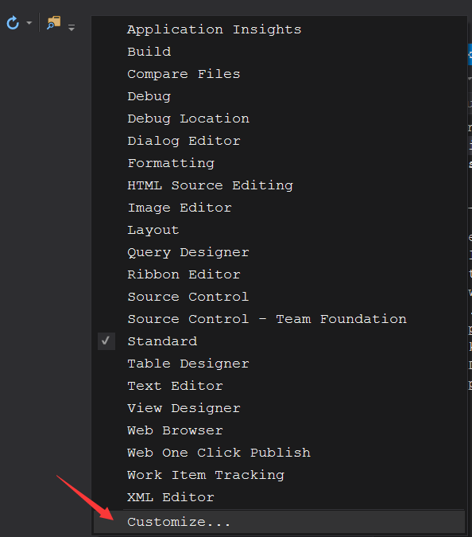
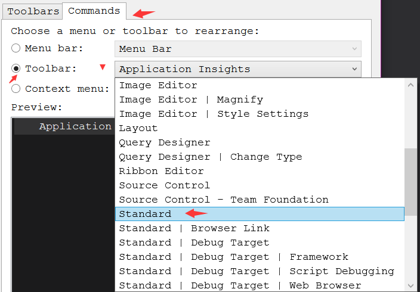
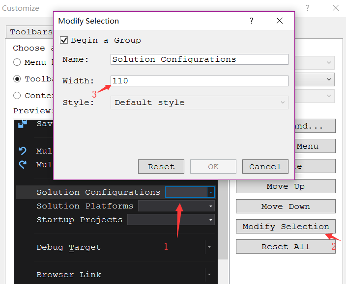

调整VS工具栏宽度
Visual Studio的Solution Configurations这个选项在工具栏下的宽度很窄，多几个字符就看不见后面的名称，需要达成的目标就是定制宽度！(好记性不如烂笔头，记忆力衰退太厉害了)
自定义工具栏
下默认情况下的工具栏宽度令人窒息！ 工具栏上右键选中[Customize…]

然后依次点选[Commands]->[ToolBar]在右侧选择[Standard]

然后点选[Solution Configurations]选中右侧[Modify Selection]调整宽度即可！,如图调整宽度为110:
